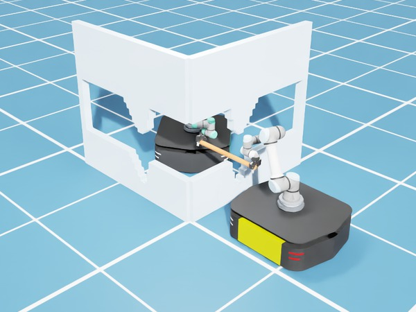
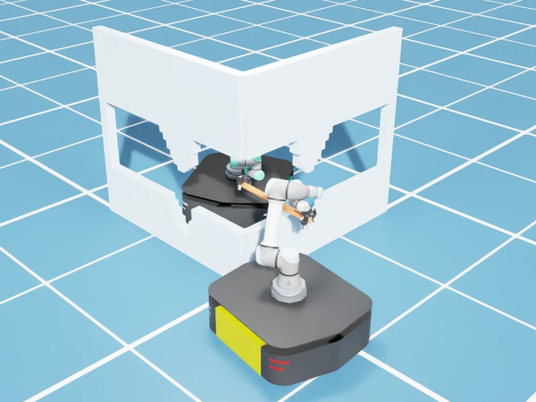

The partner's physical limits transfer across tasks.
Abstract
Robots operating in the physical world will increasingly need to coordinate with other robots, particularly in manipulation tasks where an object may be too large or heavy for a single robot to carry alone. Physical limitations caused by hardware degradation or actuator faults can restrict the actions a robot can reliably execute, yet these limitations may be unknown to its partner. We study whether a helper can infer a robot partner's physical constraints from observing it coordinate with another robot, then use the inferred capability to coordinate with the same partner on a new task. This is difficult because a demonstration shows what the constrained robot did, but not what it could have done. In physically coupled tasks, the other robot may also compensate for its limitations, making those limitations difficult to identify from the constrained robot's behavior alone. Our key insight is that these constraints shape the joint behavior of the team, making the actions of both robots informative about the constrained partner's capability. We introduce Watch, Infer, Coordinate, a benchmark spanning three physically coupled manipulation settings, together with an inference approach that scores candidate constraints using observed joint behavior. Across all three settings, our method substantially improves constraint inference and zero-shot coordination, approaching an oracle with access to the true constraints.
How it works
Watch
The helper observes a demonstrator and the constrained agent carry an object on obstacle-free tasks. It sees both robots' states and actions, but not the agent's limits.
Infer
Each candidate constraint, such as a joint position limit, a joint velocity limit, or a blocked base direction, is scored by how well a model of both robots' behavior explains the observed actions.
The animation shows example candidates. Each setting has between 172 and 2,665.
Coordinate
The helper takes the demonstrator's place on a new task with obstacles. Its planner only considers motions the partner can execute under the inferred constraint.
Why watch both robots?
A demonstration shows what the constrained agent did, not what it could have done. Because the robots are physically coupled, the demonstrator can compensate for its partner's limits, which hides them in the partner's own motion. The constraint shapes how both robots move, so we infer it from the actions of both.
Benchmark
Three joint-carrying settings of increasing physical complexity. Demonstrations are obstacle-free. At test time, obstacles block the direct path to the goal, so the team needs motions that may never appear in the demonstrations.
Videos show our helper on new tasks with obstacles.
Results
Using both robots' actions, our method recovers the partner's constraints more accurately than prior capability inference in every setting, and planning with them comes close to an oracle that knows the true constraints.
| Method | 2D rod | Fixed-base | Mobile |
|---|---|---|---|
| CE-CM-Div | 0.302±0.011 | 0.074±0.000 | 0.250±0.000 |
| Ours, partner only | 0.000±0.000 | 0.043±0.006 | 0.042±0.000 |
| Ours | 0.002±0.002 | 0.019±0.011 | 0.009±0.000 |
Normalized Hamming distance between inferred and true constraints after 8 demonstrations; 0 is exact. "Partner only" is our method using the constrained agent's actions alone.
| Method | 2D rod | Fixed-base | Mobile |
|---|---|---|---|
| Capacity-blind + CEM | 51.9±3.7 | 0.0±0.0 | 25.9±9.8 |
| CE-CM-Div + CEM | 55.6±0.0 | 44.4±0.0 | 37.0±3.7 |
| Behavioral cloning | 0.0±0.0 | 0.0±0.0 | 0.0±0.0 |
| Ours + CEM | 92.6±3.7 | 85.2±3.7 | 63.0±7.4 |
| Oracle + CEM | 96.3±3.7 | 88.9±6.4 | 70.4±3.7 |
CE-CM-Div is a prior capability-inference method that uses state trajectories. Capacity-blind CEM assumes a fixed default capability, and behavioral cloning imitates the demonstrations. Oracle CEM is given the true constraints. All CEM methods share the same planner.
Mean ± standard error over three seeds.
The inferred constraint changes the plan
Planning with the inferred constraint keeps the helper's plan within what its partner can physically execute.


Citation
@article{ye2026watch,
title={Watch, Infer, Coordinate: Inferring Robot Partner Constraints for Zero-Shot Coordination},
author={Ye, Suyu and Zhang, Zheyuan and Tadiparthi, Vaishnav and Mahjoub, Hossein Nourkhiz and Pari, Ehsan Moradi and Shu, Tianmin and Bharadhwaj, Homanga and Agarwal, Nakul},
journal={arXiv preprint arXiv:2610.02170},
year={2026}
}